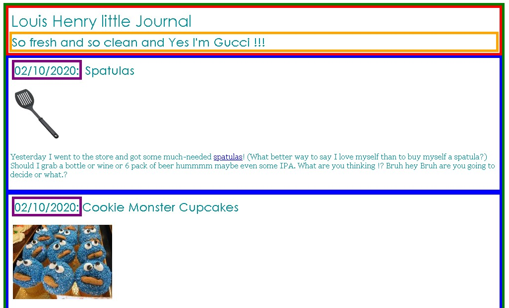
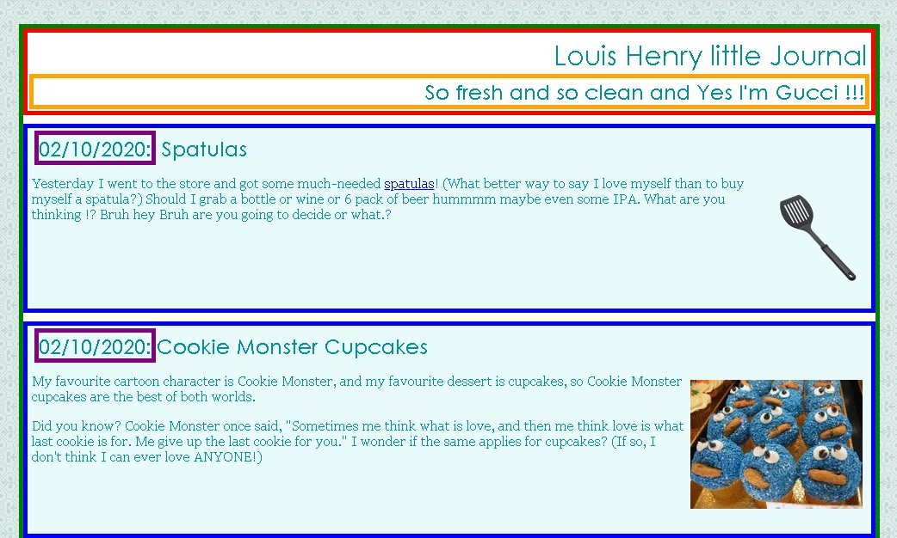

_files/output5.png)
The purpose of this lab is to practice writing Cascading Style Sheets to control the appearance and layout of a web page.

Link to Assignment 1
The only major changes you should need to make to the XHTML code are adding ids, classes, divs, and spans. You may also change the text of the journal if you like, such as changing it to your name or rewording the journal entries. But please don't spend a large amount of time doing this, so you can move on to the later exercises.
Link to Assignment 2

Link to Assignment 3Link to Assignment 4
Follow your instructor's directions to upload your page to your student web server. Verify that you did this successfully by viewing your page in the web browser.
Write your page so that if you hover over any element (i.e. any header, paragraph, image, etc), the element is highlighted in yellow.
This must be a one-selector, one-property addition to your stylesheet -- no commas allowed! (Note: This is tricky.)
_files/w3c-xhtml11.png)
_files/w3c-css.png)